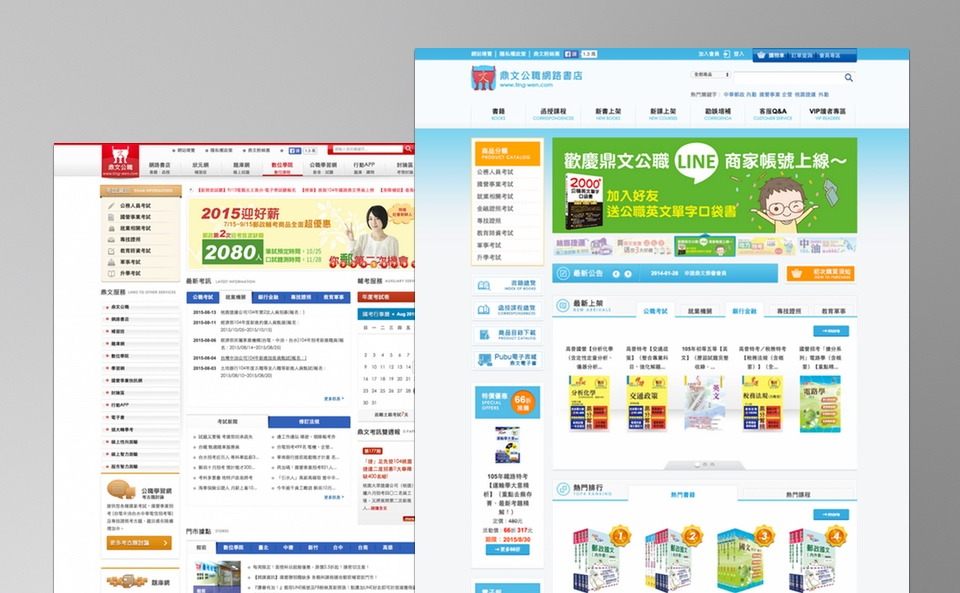
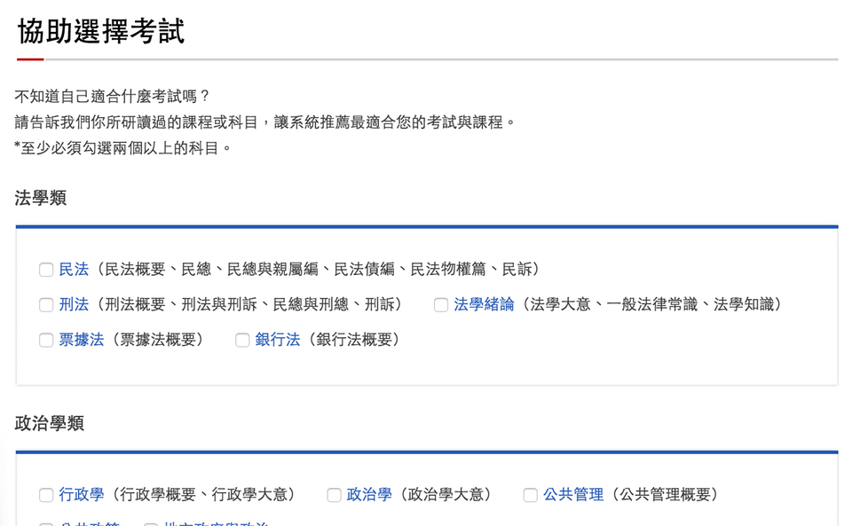
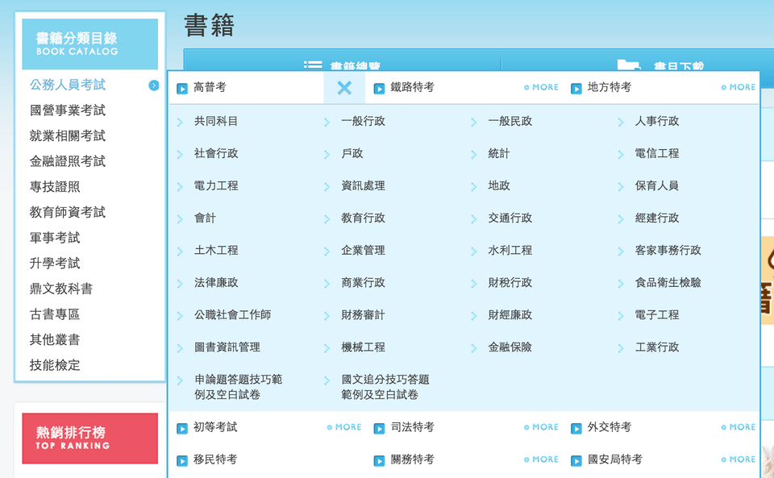

鼎文公職網路書店與入口網
鼎文公職網路書店為每月平均 5,0000 造訪人次的網站，layout （前端版型）近 70 頁。基於塑造鼎文公職品牌形象、優化資訊架構與使用者流程等考量，決定將網路書店網站進行改版，拆為鼎文公職入口網與網路書店兩個網站。本次改版範圍涉及資訊架構調整、新增功能與重新設計風格，並新增入口網行動版本。
Case Study
協助選擇考試功能
就使用者多為首次接觸公職考試的族群作為目標對象，設計出可以推薦他們擅長考試的系統。
資訊架構修正調整
商品分類從原先兩層的分類調整為三層分類，連帶調整導覽設計、商品分類原則、內部作業流程等，讓使用者可以更容易快速找到理想商品。